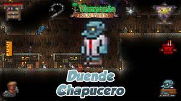

Tiene la opción de Reforjar, lo que permite darle o cambiar los bonos a tus Armas y Accesorios.
El duende chapucero |
|
 |
|
Estadisticas |
|
Tipo |
NPC |
Salud |
250 |
Arma |
bola con pinchos |
Defensa |
15 |
Especialidad |
Venta de objetos y opción de reforjar armas y accesorios.. |
Bestiario |
|
Descripcion |
Exiliado del resto de duendes por ser un pacifista inteligente, el Duende chapucero vende herramientas para combinar accesorios en versiones mas fuertes. |
Bioma preferido |
El subsuelo |
IDs internas |
|
ID de bestiario |
107 |
ID de NPC |
14 |
Cuando está sin casa:
Cuando lo liberas:
Cuando derrotas oleadas de la Ejército del Antiguo
Cuando hay Fiesta:
| Objeto | Precio | Disponibilidad |
|---|---|---|
| Botas cohete | 5 |
Siempre disponible |
| Regla | 1 |
Siempre disponible |
| Taller de chapuzas | 10 |
Siempre disponible |
| Cinturón de herramientas | 10 |
Siempre disponible |
| Gancho de escalada | 2 |
Siempre disponible |
| Bola con pinchos | 80 |
Siempre disponible |